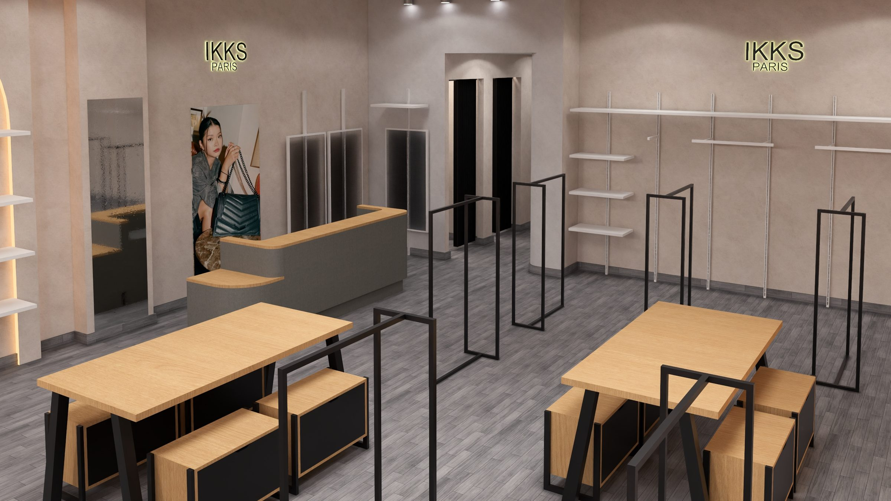
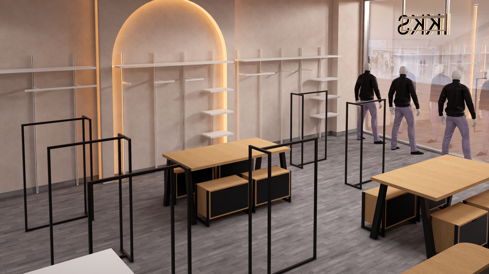
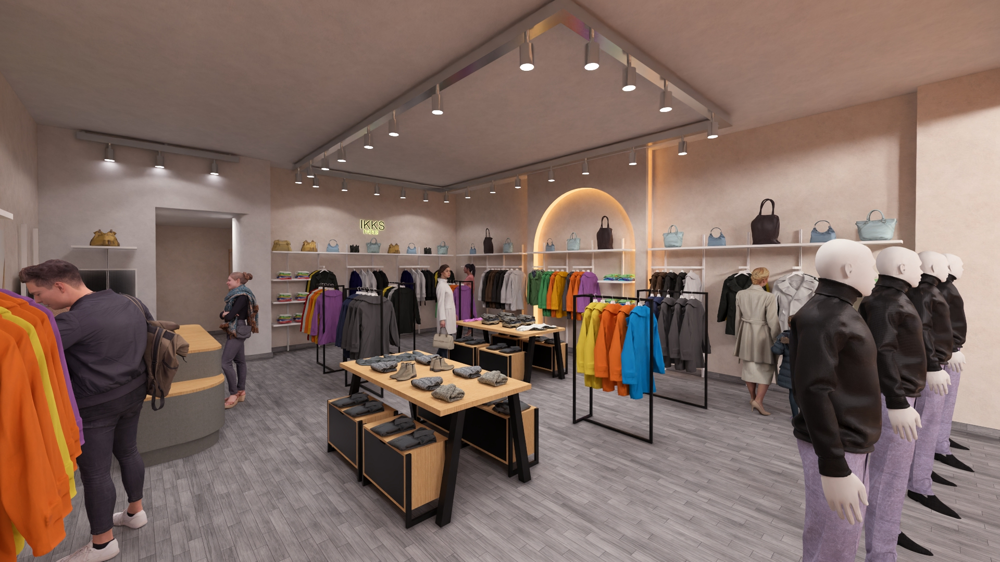
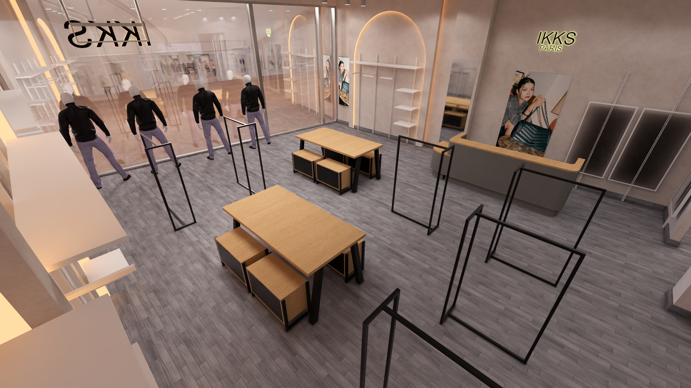

IKKS pop up
A complete technical project for a temporary fashion space in San Sebastián de los Reyes, built to open on schedule inside a shopping centre that never stopped trading around it.
The challenge
The project needed to organise sales, fitting rooms, storage and point of sale in a space that had to be installed efficiently and operate clearly from opening day. Every drawing had to survive a single overnight build with no room for on-site improvisation.

The work
I prepared the location plan, refurbished layout, dimensioned drawings and elevations explaining the height and position of the main elements, from the till counter to the fitting-room partitions, so the installation team needed no further clarification on site.



What the project taught me
Temporary projects still need permanent clarity. The drawings must remove uncertainty because the installation window is usually very short, and there is no second night to fix a dimension that was wrong on paper.


